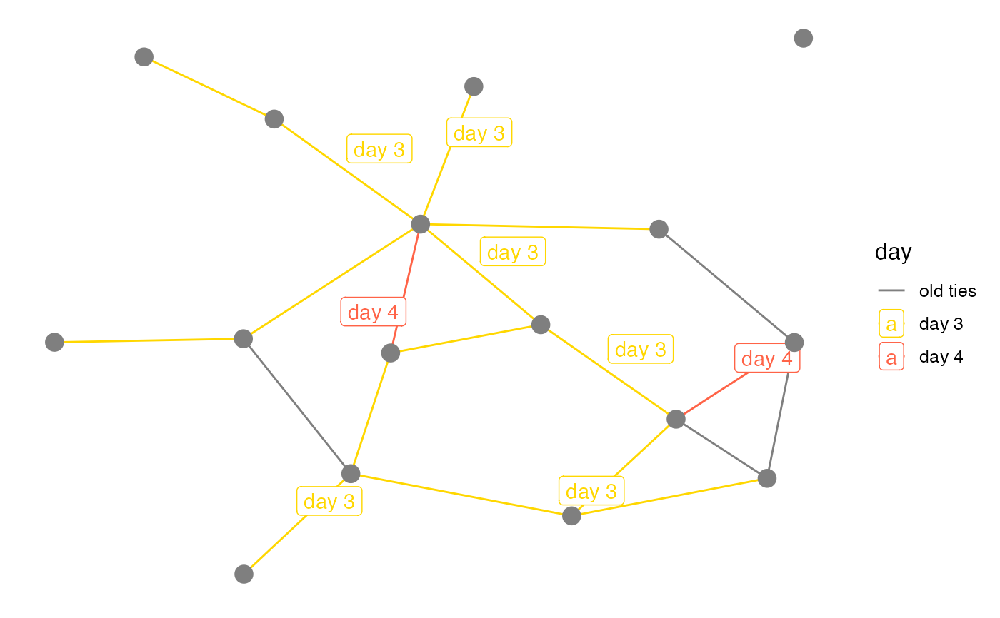

All arguments to both geom_edgetext_repel and
geom_edgelabel_repel are identical to those of
geom_label_repel. geom_text_repel and
geom_label_repel produce strictly identical results.
geom_edgetext_repel( mapping = NULL, data = NULL, parse = FALSE, ..., box.padding = unit(0.25, "lines"), label.padding = unit(0.25, "lines"), point.padding = unit(1e-06, "lines"), label.r = unit(0.15, "lines"), label.size = 0.25, arrow = NULL, force = 1, max.iter = 10000, nudge_x = 0, nudge_y = 0, na.rm = FALSE, show.legend = NA, inherit.aes = TRUE ) geom_edgelabel_repel( mapping = NULL, data = NULL, parse = FALSE, ..., box.padding = unit(0.25, "lines"), label.padding = unit(0.25, "lines"), point.padding = unit(1e-06, "lines"), label.r = unit(0.15, "lines"), label.size = 0.25, arrow = NULL, force = 1, max.iter = 10000, nudge_x = 0, nudge_y = 0, na.rm = FALSE, show.legend = NA, inherit.aes = TRUE )
| mapping | Set of aesthetic mappings created by |
|---|---|
| data | A data frame. If specified, overrides the default data frame defined at the top level of the plot. |
| parse | If TRUE, the labels will be parsed into expressions and displayed as described in ?plotmath |
| ... | other arguments passed on to
|
| box.padding | Amount of padding around bounding box, as unit or number.
Defaults to 0.25. (Default unit is lines, but other units can be specified
by passing |
| label.padding | Amount of padding around label, as unit or number.
Defaults to 0.25. (Default unit is lines, but other units can be specified
by passing |
| point.padding | Amount of padding around labeled point, as unit or
number. Defaults to 0. (Default unit is lines, but other units can be
specified by passing |
| label.r | Radius of rounded corners, as unit or number. Defaults
to 0.15. (Default unit is lines, but other units can be specified by
passing |
| label.size | Size of label border, in mm. |
| arrow | specification for arrow heads, as created by |
| force | Force of repulsion between overlapping text labels. Defaults to 1. |
| max.iter | Maximum number of iterations to try to resolve overlaps. Defaults to 10000. |
| nudge_x | Horizontal and vertical adjustments to nudge the
starting position of each text label. The units for |
| nudge_y | Horizontal and vertical adjustments to nudge the
starting position of each text label. The units for |
| na.rm | If |
| show.legend | logical. Should this layer be included in the legends?
|
| inherit.aes | If |
if (require(network) && require(sna)) { data(flo, package = "network") n <- network(flo, directed = FALSE) # arbitrary categorical edge attribute e <- sample(1:4, network.edgecount(n), replace = TRUE) set.edge.attribute(n, "day", e) # with repulsive edge labels ggplot(n, aes(x, y, xend = xend, yend = yend)) + geom_edges() + geom_edgetext_repel(aes(label = day), box.padding = unit(0.5, "lines")) + geom_nodes(size = 4, colour = "grey50") + theme_blank() # repulsive edge labels for only a subset of all edges edge_day <- function(x) { x[ x$day > 2, ] } ggplot(n, aes(x, y, xend = xend, yend = yend)) + geom_edges(aes(colour = cut(day, (4:0)[ -3 ]))) + geom_edgetext_repel(aes( label = paste("day", day), colour = cut(day, (4:0)[ -3 ]) ), data = edge_day) + geom_nodes(size = 4, colour = "grey50") + scale_colour_manual("day", labels = c("old ties", "day 3", "day 4"), values = c("grey50", "gold", "tomato") ) + theme_blank() }